Asya'da Eğitim — Pürüzsüz Kontur & Optik Hizalama
İki kusur giderildi: (A) çokgen kontur yerine kübik Bézier; (B) mühürün dikey konumu bağımsız ölçüldü ve dört alternatife açıldı. Mühür ve kelime markası kanonikleştirilmedi.
A · Kontur yeniden kurulumu
Önceki sürüm approxPolyDP ile 592 köşeli, 552 düz çizgili bir çokgendı; 800 %de düz yüzler ve tırtıklı kenarlar okunuyordu. Yeni sürüm köşe algılayıcı ile ayrılan yaylar arasına kübik Bézier oturtuyor. Köşeler bükülmedi: her yayın uçları köşe noktasına sabitlenir, yön keskinliği korunur.

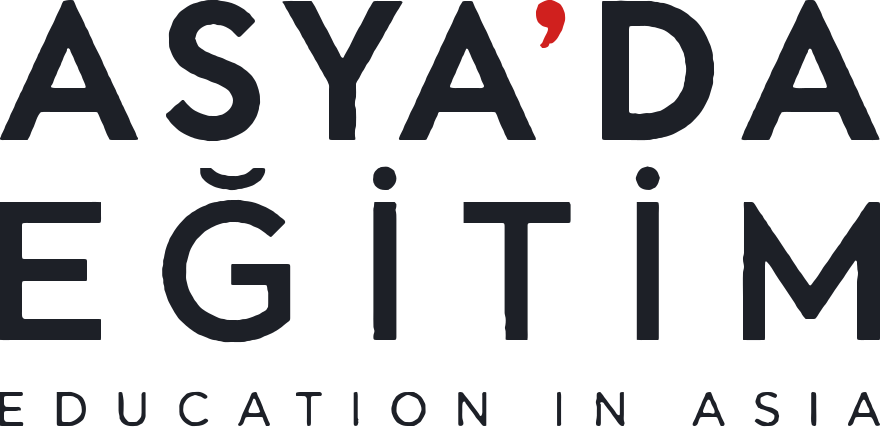
Tam boy · üç satır ortak ölçü
yay içi teğet kopması .... 0.0° (sınır 6°)
eğri uyumu ............. ölçülen azami sapma ≈ 1.0 px (yerel 881 px)
üç satır ölçüsü ........ TR1 879.5 · TR2 879.9 · EN 879.9 → fark 0.4 px
kanonik mühür ......... 8f5d46f0302c4cc7e3765d3bfce9445f842dbd92f1e0f8fbe99f9f509c77e11a
Büyütülmüş kontur karşılaştırmaları
Aynı bölge, iki sürüm, 100 / 400 / 800 %.
s-spine — 100 / 400 / 800 %
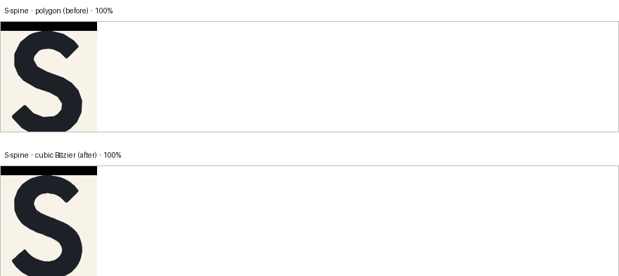
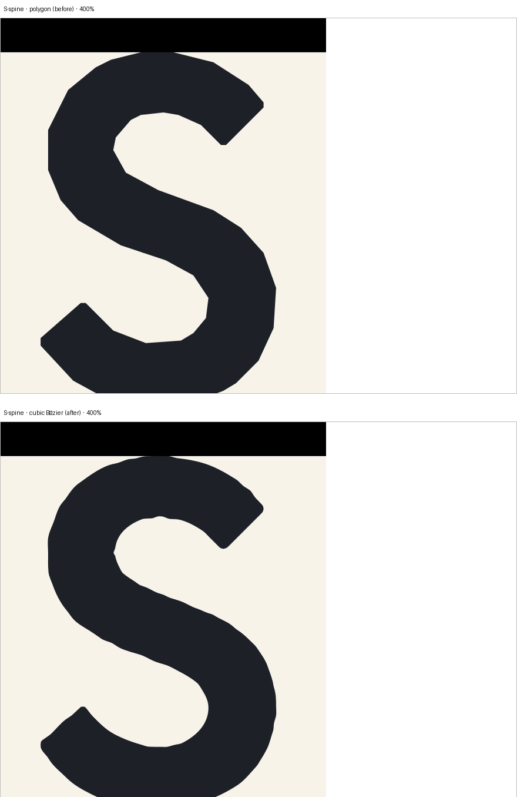
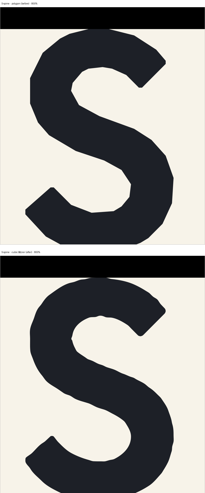
a-apex — 100 / 400 / 800 %
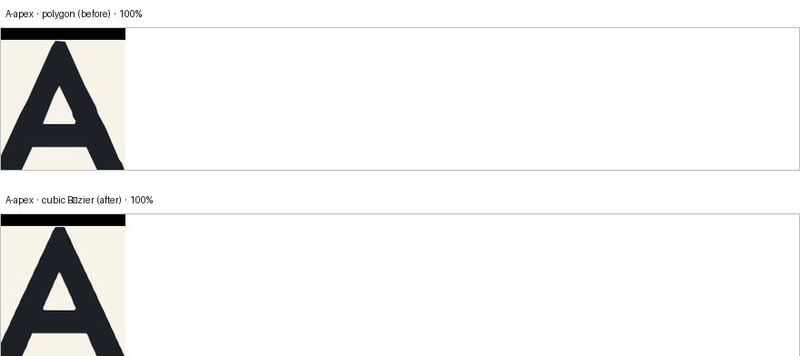
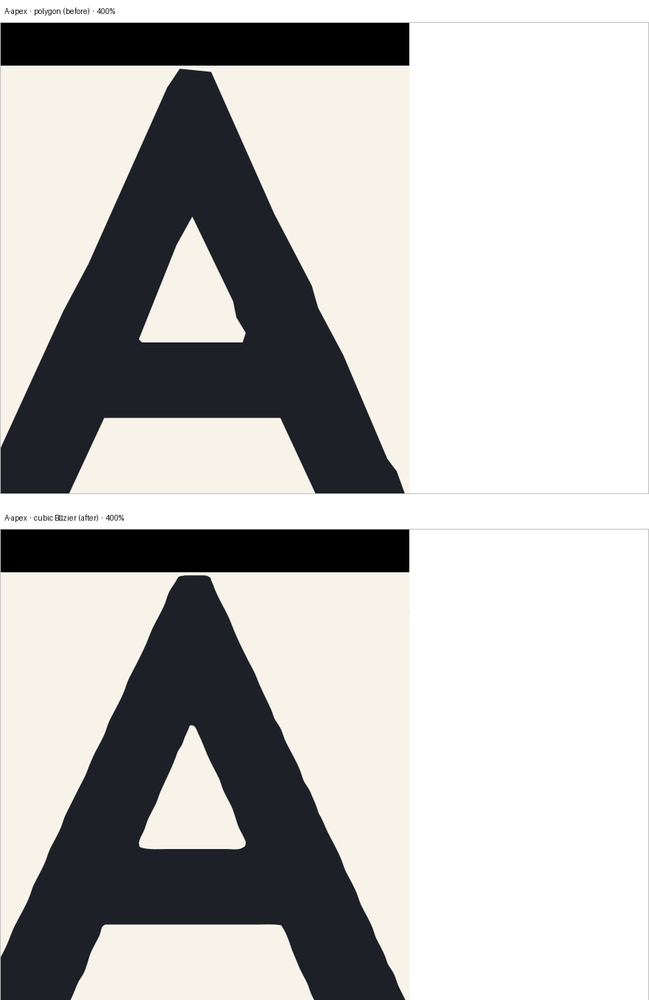
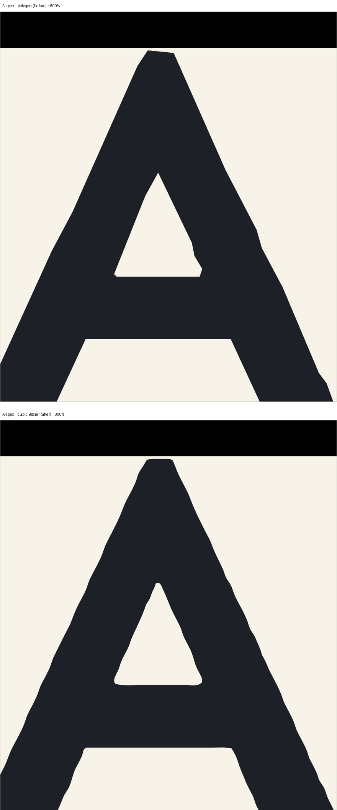
d-bowl — 100 / 400 / 800 %
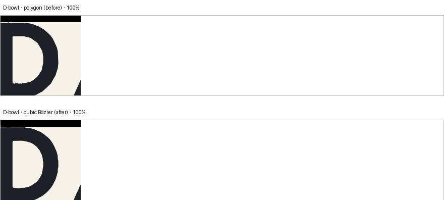
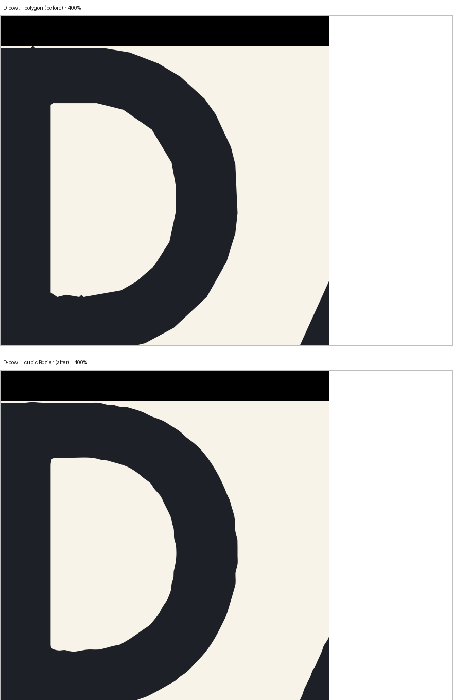
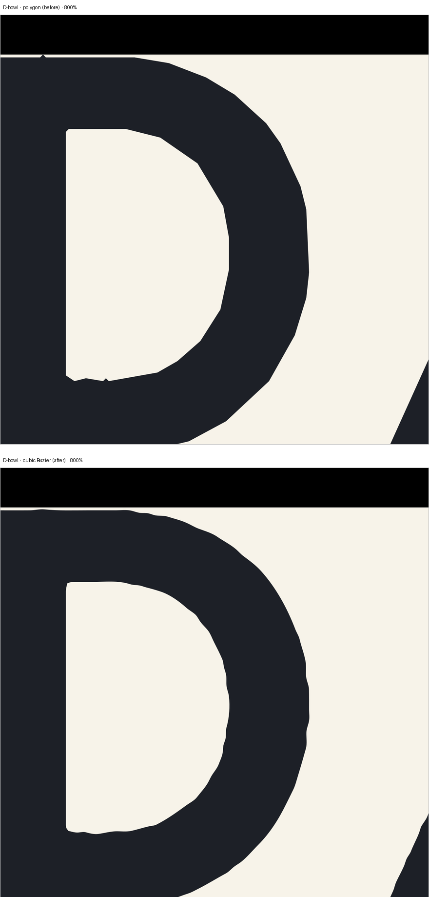
g-bowl — 100 / 400 / 800 %
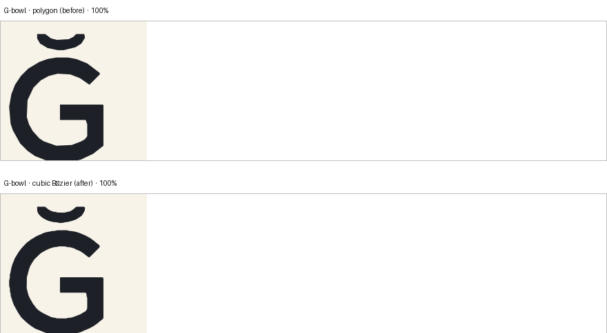
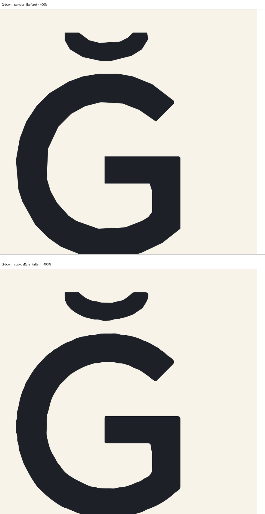
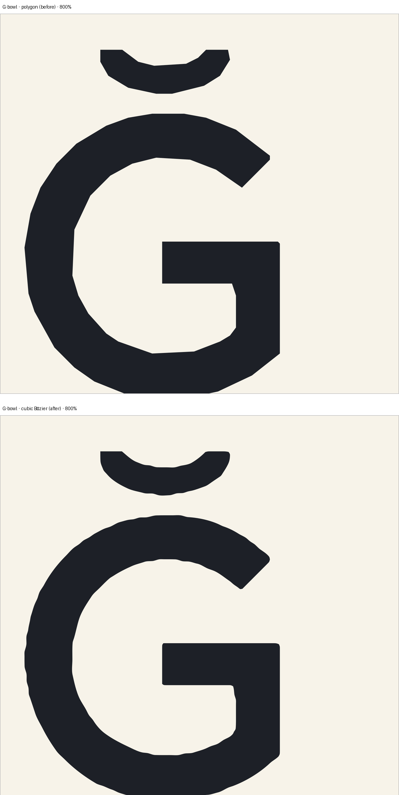
i-dot — 100 / 400 / 800 %
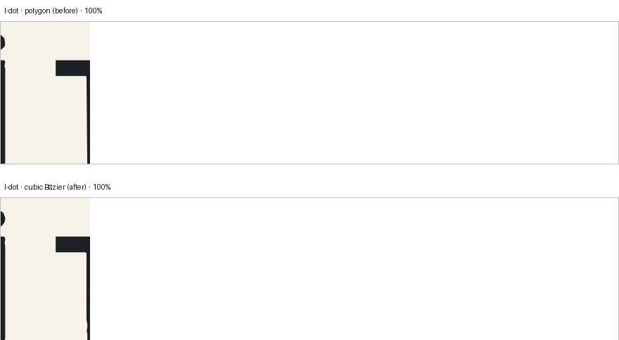
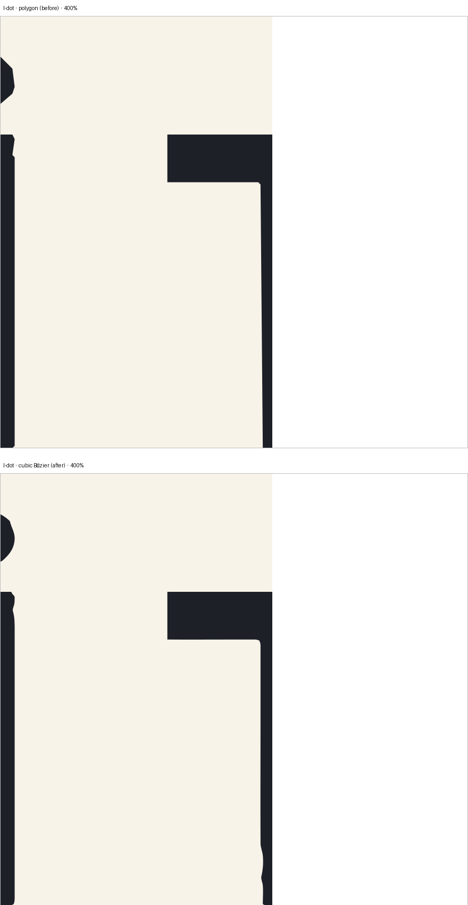
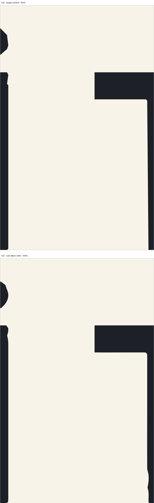
en-line — 100 / 400 / 800 %
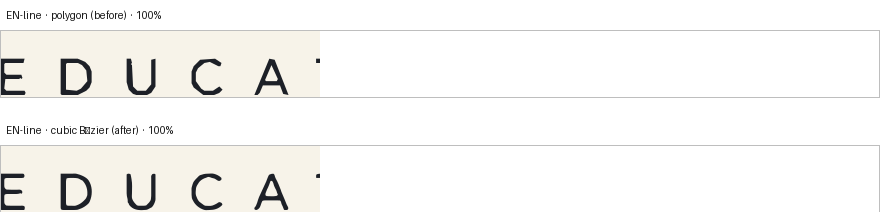
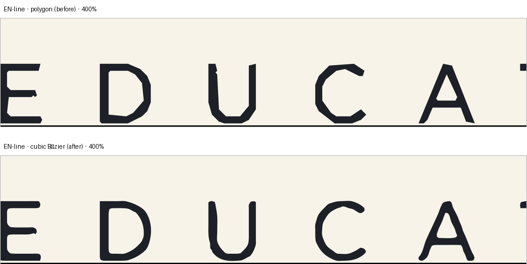
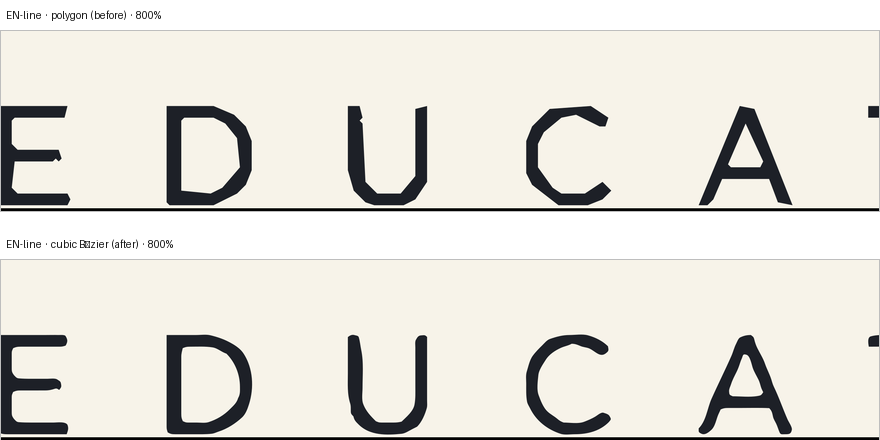
B · Optik hizalama ölçümü
Yatay kilit, mührü tüm kelime markası kutusuna göre ortalıyordu. Kutu, tırnak taşmasını ve alt boşluğu da içerdiği için bu geometrik olarak doğru ama algısal olarak değildir. Aşağıdaki değerler birbirinden bağımsız ölçüldü.
| Ölçüm | Değer (yerel px) | Nasıl |
|---|---|---|
| Mühür görünür üst / alt | ölçüldü | 10× render, kâğıt L=243, mürekkep eşiği L<235 |
| TR1 kap çizgisi | -11.75 | harf bileşenlerinin tepe medyanı (tepe noktası 1 px sivrilemi değil) |
| TR1 taban çizgisi | 129.0 | TR1 bandının alt kenarı |
| Tırnak tepesi | -12.2 | TR1 bandındaki tek küçük bileşen |
| Tırnak taşması | 0.45 | kap çizgisi − tırnak tepesi |
| Kelime markası üst / alt | -12.2 / 414.1 | tüm mürekkep kutusu |
| Kutu merkezi | 200.95 | geometrik orta |
| Mürekkep ağırlık merkezi | 162.14 | algısal kütle merkezi |
| Kap→taban orta | 58.62 | düz kenarlı mührün gözle hizalandığı referans |
Dört yatay hizalama alternatifi
Mühür yalnızca dikeyde kaydırıldı. Ölçekleme veya bozulma yok; her ikilide tam olarak kanonik mühür kullanıldı. Seçim yapılmadı.


Kilit dikey & yığın önizleme
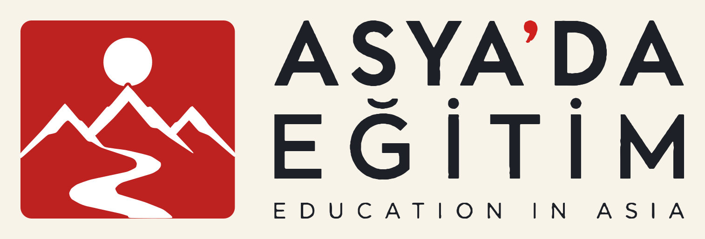
C · Doğrulama
Kontur ve içerik kontrolleri (10 PASS / 0 FAIL)
| PASS | 1460 cubic segments, 0 straight segments |
| PASS | worst join 0.00 deg (limit 6.0) at (np.float64(309.0), np.float64(376.3013673033979)) |
| PASS | 9 open counters vs 9 in the polygonal build; largest areas (native px2): [4257.4, 742.4, 741.0, 732.5, 518.6, 444.7] |
| PASS | 977 px of red ink (30x49 native) |
| PASS | 3 breve component(s) at x=[242, 411, 668] |
| PASS | 2 dot components at x=[411, 668] |
| PASS | 0 sign flips across 31 rings |
| PASS | TR1 879.50 TR2 879.90 EN 879.90 spread 0.40 px |
| PASS | left spread 0.00 px, right spread 0.40 px |
| PASS | 8f5d46f0302c4cc7 |
Geometri kabul kapısı — 0 FAIL / 29 kontrol
| PASS | text line TR1 within common measure W | devL 0.00 devR 0.76 px |
| PASS | text line TR2 within common measure W | devL 0.00 devR 0.32 px |
| PASS | text line EN within common measure W | devL 0.00 devR 0.32 px |
| PASS | three lines share one measure W | widths [879.68, 880.12, 880.12] (spread 0.44 px) |
| PASS | stacked: seal left edge | 0.29 px |
| PASS | stacked: seal right edge | 0.25 px |
| PASS | stacked: seal top edge | 0.37 px |
| PASS | stacked: seal bottom edge | 0.23 px |
| PASS | stacked: text left edge | 0.37 px |
| PASS | stacked: text right edge | 1.06 px |
| PASS | stacked: text top edge | 0.28 px |
| PASS | stacked: text bottom edge | 0.37 px |
| PASS | stacked: clearspace error | -0.51 px (intended 85) |
| PASS | stacked: optical centre axis | 0.69 px |
| PASS | horizontal: seal left edge | 0.46 px |
| PASS | horizontal: seal right edge | 0.94 px |
| PASS | horizontal: seal top edge | 0.46 px |
| PASS | horizontal: seal bottom edge | 0.48 px |
| PASS | horizontal: text left edge | 0.75 px |
| PASS | horizontal: text right edge | 1.40 px |
| PASS | horizontal: text top edge | 0.46 px |
| PASS | horizontal: text bottom edge | 0.48 px |
| PASS | horizontal: clearspace error | 0.19 px (intended 85) |
| PASS | horizontal: seal↔text vertical centre | 0.00 px |
| PASS | canonical seal unmodified (SHA-256) | 8f5d46f0302c4cc7 |
| PASS | seal geometry byte-identical in all lockups | 3 files, 0 deviations |
| PASS | no word/letter stretching (rigid bodies, tracking only) | per-gap tracking tr2 3.20 / en 1.79 px |
| PASS | Turkish diacritics intact (Ğ breve + 2 İ dots) | 9 components, 6 letters, 0 orphans |
| PASS | letter counters open (not filled solid) | A counter (TR1)=0..23(24px), D bowl (TR1)=629..685(57px), G counter (TR2)=120..168(49px), O counter (EN)=380..394(15px) |
D · Son boyut kullanım önizlemeleri


Koyu zemin